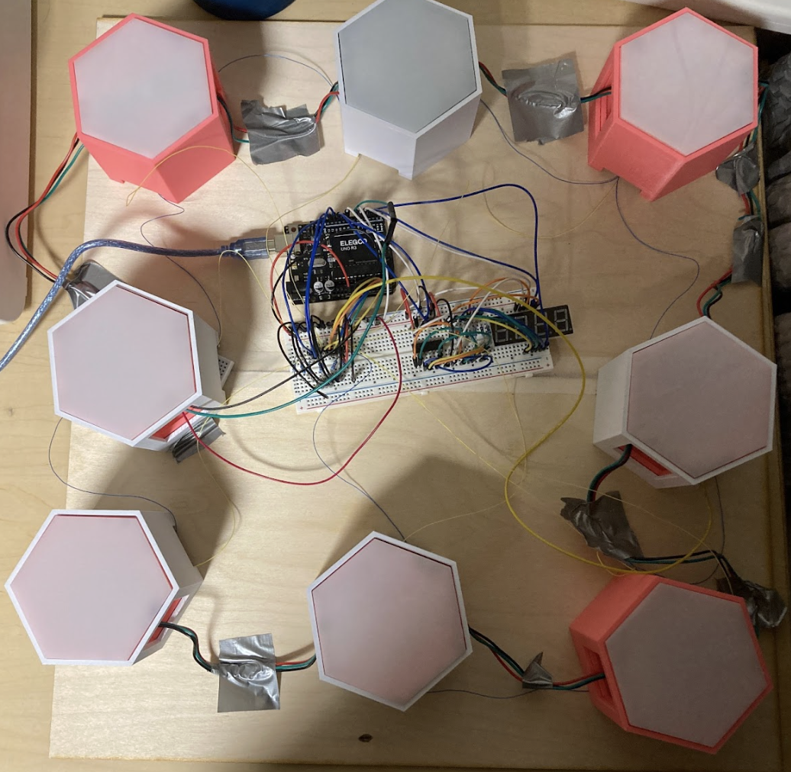

Inspired by Batak, Lightspeed is a high-speed reaction game where the player must hit illuminated buttons as fast as possible. Batak usually features a full-body board with eight buttons to hit. This board’s utility has a diverse audience–from athletes in Formula 1 and football training their reaction time to finding its use within parties and exhibitions. Our rendition capitalizes on the original board’s physical interactive nature and friendly competition while making the board smaller, portable, and with a lot more color.
Lightspeed includes numerous parts and elements of engineering. We decided to design our own hexagonal buttons as we wanted the buttons’ colors to be completely changeable to our preference. Thus, we designed and 3D-printed the buttons to each hold an individually- addressable LED. Additionally, 3D-print was a viable candidate as we expected the buttons would go through high stress as the player must hit the button rapidly. As for the cover, acrylic was the best material on hand to reflect the random colors in a bright yet slightly muted manner. As for implementing its portability and accessibility, the board’s edge to edge is within arm’s reach, only requiring arm movement to play.
This game was created in mind of gathering people around an enjoyable, interactive game. Ultimately, it creates a shared, safe space for engagement in a good-natured contest, pivoting the game as a simple yet powerful tool for social connection.
Collaborators
Shravya Salem Sathish, UCSB
Jamie Shih, UCSB